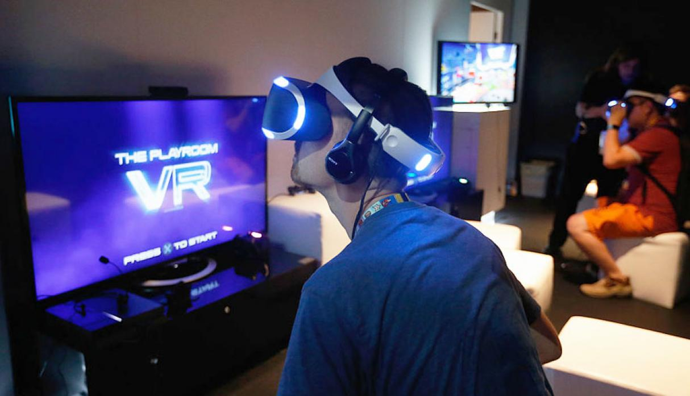

Realidad Virtual
La relaidad virtual es la percepcion del hombre de un entorno generado por un software. La relidad virtual combina escenarios y los ejecuta en tiempor real para aumentar la percepcion del usuario
Las aplicaciones que en la actualidad encontramos de la realidad virtual a actividades de la vida cotidiana son muchas y diversas. Hay que destacar: la reconstrucción de la herencia cultural, la medicina, la simulación de multitudes y la sensación de presencia. Ultimamente la realidad virtual ha llegado a juegos online en los cuales las personas simulan una segunda vida en un mundo virtual, en lo que el realismo conseguido provoca que los individuos durante un tiempo sean otra persona.
La realidad virtual se encuentra en su mejor momento. Los cascos de RV como Oculus, HTC o Sony ya han alcanzado un nivel mundial. Ello se debe en parte por los precios que están bajando, lo que hacen más accesible esta tecnología.
